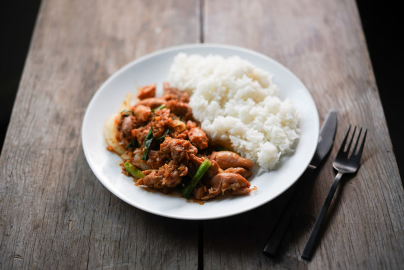
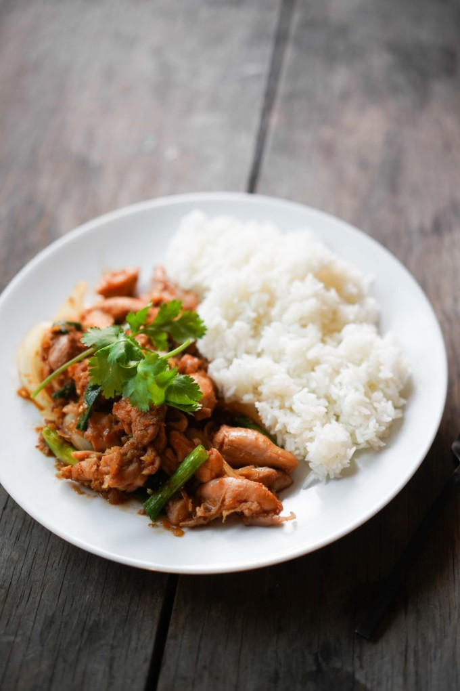

Vietnamese Spicy Lemongrass Chicken - Ga Xao Sa Ot

Home
About the recipe:
Gà xào sả ớt is an aromatic blend of chile sauce, lemongrass, tender chicken, and veggies, but more importantly it’s a fast and easy, one-pot dish that you can make during the week.
Also known as Vietnamse spicy lemongrass chicken, this dish is more commonly made at-home in Vietnam vs. restaurants (even though it was the most popular dish at my mom’s Vietnamese restaurant).
The chicken
In Vietnam, this dish usually includes bone-in chicken because that is the easiest, most natural form to serve meat–you don’t get a choice to waste any parts of the chicken! However, In my mom’s old restaurant this recipe was the most popular item amongst the Silicon Valley locals because it was very accessible.
For this recipe, my ideal combination is thigh and chicken breast to get the best of both worlds. Another option if you’re vegetarian and needing that lemongrass high is using crispy fried tofu instead of chicken.

Ingredients:
CHICKEN & MARINADE
- 1 lb chicken (cut into bite-sized pieces)
- 1 tablespoon salt
- 2 teaspoon sugar
- 1/3 teaspoon MSG or chicken bouillon (Optional)
AROMATICS
- 4 tablespoon neutral cooking oil
- 3 tablespoon shallots, minced
- 1 tablespoon garlic, minced
- 4-5 tablespoon lemongrass, minced
CHILE SAUCE
- 2 tablespoon fish sauce
- 1 tablespoon sambal
- 1/2 cups Coconut juice (or lemon-lime soda, or water)
GARNISH
- 1/2 medium onion cut into slivers (optional)
- 1 stalk green onion cut into 2-inch pieces (optional)
Steps:
- Marinade: Combine chicken and marinade ingredients, and let it sit to marinate for 15 minutes.
- Mince aromatics: Clean the lemongrass, remove the outer layers of rough leaves and find the yellow leaves inside. Slice the lemongrass roots into ⅛” slices first, then add to a food processor to finely mince and set aside. Mince/process the garlic then set aside. Mince/process shallots and set aside.
- Make the chile sauce: Combine fish sauce, sambal, and coconut juice and mix to combine.
- Pat dry your chicken, cut into bite size pieces.
- In a pan over medium-high heat, add four tbsp of oil and add the shallots and saute until light brown. Add the garlic and saute until light brown. Add lemongrass and stir until fragrant. Add the chicken and brown it a little.
- Lower to medium heat, add the Chile Sauce. Stir to mix, taste and adjust as necessary, then cover with a lid. After about five minutes, stir a bit, retaste and reseason if necessary, add more cooking time if needed.
- Add the garnish about 1-2 minutes before the chicken finishes cooking to soften a bit. The dish is done once the chicken reaches an internal temp of 165 °F, or until the center of the chicken is no longer pink.
Serve with a side of rice.
Back to top
Source